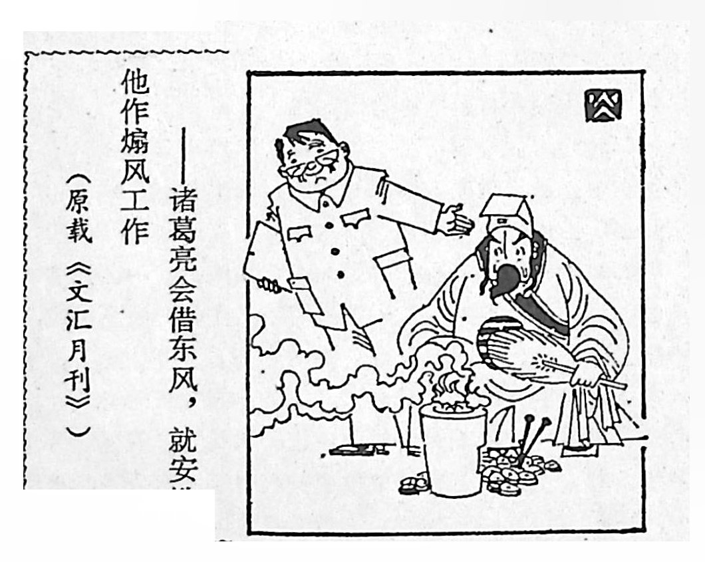

佚名 《人事》1986年第3期（总第6期），第42页（原载《文汇月刊》）
诸葛亮煽火
Zhuge Liang Fans the Fire
- Caption
- ——诸葛亮会借东风，就安排他作煽风工作
—Zhuge Liang knows how to 'borrow the east wind', so put him on fanning duty. - Description
- A boss sets Zhuge Liang, the master strategist, to fanning a cooking stove.
- Note
- Zhuge Liang 'borrowed the east wind' for the fire attack at Red Cliff in Romance of the Three Kingdoms. The cartoon mocks assigning talent by a literal reading of reputation.
- Artist
- Unattributed 佚名
- Reprinted from
- 《文汇月刊》 — Wenhui yuekan (Wenhui Monthly)
- Published in
- 《人事》1986年第3期（总第6期）, p. 42
- Themes
- Talent and its neglect · Fable, legend and history

Cite
Unattributed, “诸葛亮煽火” [Zhuge Liang Fans the Fire], Renshi (Personnel) 《人事》, 1986, no. 3, p. 42.